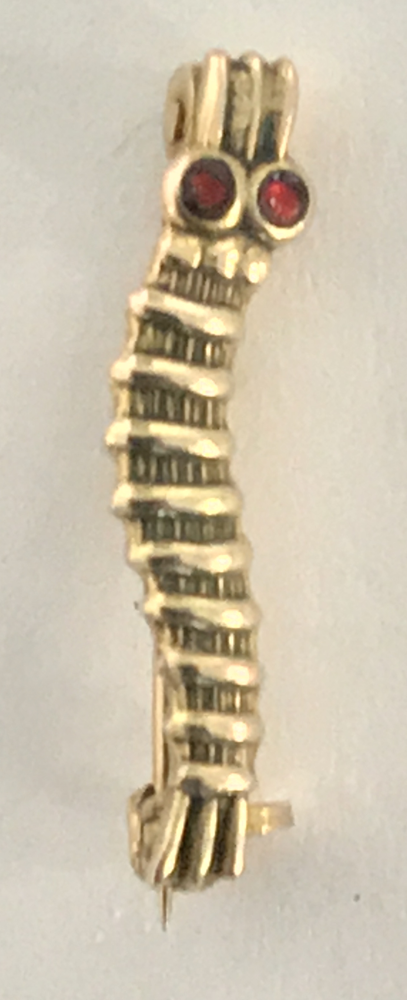

Maj Odendaal was shot down on the 3rd of April, 1945, while flying an operational sortie in the area of Dravograd , Slovenia (Yugoslavia).
The crash site area Grid coordinates are RAF special map reference: RD7445 - 46°17'34.33"N, 14°57'42.42"E
Classified Report
The following document is the verbatim copy of Maj Odendaal's report of his Escape and Evasion activity.
Report on Evasion and escape of Major H.O.M. Odendaal. DFC
No. 103164 V Major H.O.M Odendaal, DFC, states:-
On April 3rd. 1945 I was briefed to lead an armed recce of Celje – Maribor – and North.
I baled out at 1515 hours on April 3rd. after being hit in the engine at about 10 feet. Gaining height, I flew South from the target, keeping my hood closed to gain speed. I managed to get to 1500 feet and the baled. I held the stick, wound the tail trim forward until it was fully forward, then let go the stick with the result that I was shot up 400 ft out of the cockpit. I bumped my left leg against something in the cockpit or against the wireless mast, and cut my foot on a switch. I opened my chute as soon as I could get my hands down, and the chute opened immediately.
I landed in a tree, which I gripped until I released my chute and then climbed down the trunk. The A/C1 hit the ground just after I opened my chute and made a big mushie2. The partisans told me afterwards that there was very little left of the A/c. My revolver fell out of the holster when I baled but fortunately the lanyard fixed around my shoulder prevented me losing it.
After climbing down the tree, I ran South for about 5 miles, and then, hearing some voices, hid in a thicket. A man approached but I remained in hiding until I saw that he had a red star. I then emerged and the man said he was a Tito Partisan. I replied that I was an English pilot.
We then went about 500 yards to a farmhouse where we met about 8 other partisans and then we all returned towards the trees where my parachute was. After we had gone about 1 mile we met some other partisans with my chute. I was then given some Easter bread and some fresh milk at a farm-house. The Easter Bread is a brownish concoction sweetened with pieces of pear and is quite appetizing.
Eight partisans then took me to a bunker in the mountain forest. It was about 12 feet square and so well camouflaged that when I went outside for the usual thing (not being and Iti2) I lost my way and had to be given a “Homing”. It had a stove and bunks for seven people to sleep and an oil lamp. I stayed with the partisans for 5 days. Each morning a little boy used to visit the bunker and give the particulars of the Germans in the nearby village. While I was there a message was sent to the sector commander, asking permission for me to travel South and for “Kuriers” (Guides) to be organized.
When the permission came, we set out for a Kurier Station three hour travelling away, and then with the two guides and three or four partisans I set out at about 1600 hours intending to make for Cremonl. There was a 10/10 rain but one of the partisans gave me a leather lumber jacket as protection. We walked for about four hours and then at a farmhouse, waited for darkness before crossing the Celje-Dravograd road where the Germans had patrols.
We set out again at 2200 hours and stopped at 0500 hours at the next Kurier Station at Saint Lionards, where we stayed all day until 1600 hours. We then set out for the next Kurier station, walking West for 6 hours and then stopping for the night. The party kept changing as we went.
On Monday we had to wait in the mountains all day as there was a fight in progress between the Germans and the partisans further on. I had by this time got used to sleeping without blankets and using my revolver as a pillow. Early morning we were rushed down South and After walking for about three hours waited in a house in the mountains and at 1900 hours set off again and reached the next Kurier station after a two hour walk. Tuesday night and all of Wednesday we spent waiting at a forest and on Wednesday night set off to cross the Sava river where the railway line was patrolled by the Germans, and in between the railway line and the river there were enemy machine gun and mortar pits 300 yards or so apart. We crossed the road at about 2230 hours in darkness – no moon – and then ran line astern (6 or 7 of us) about 10 yards apart, as there was no cover, for the river bank. We could hear the Germans talking in the machine gun posts as we ran but apparently they did not hear us.
We reached the river at about 2300 hours (the time agreed upon the previous night when a partisan swam the river to contact the people on the other side – the first time for about a month) then our Kurier threw two stones into the water – the arranged signal – and received two stones in reply. We waited 10 minutes and then a little canoe came across. The Sava is very fast flowing and is about two hundred yards wide. I went across first and the others followed, taking about an hour in all. Two Kuriers were waiting to take us to the next stage. While waiting for the others to come across, one of the partisans gave me a drink of
/2.
Schnapps which was so fiery that I could not chew for four days as my mouth was raw. We walked until 0630 hours on Thursday morning when we reached a partisan battalion where I was to stay until further notice. This was near Palsnik, just south of the Sava. I stayed there for four days and was joined by 2 American aircrew, one RAF pilot of BAF and one N. Zealander who had been in Greece for four years.
We remained with the battalion until May 9 moving from place to place, avoiding Germans. Then we went to Litija where we fought the Germans for a whole day for the town and won it. We requisitioned a HDV the next day and travelled for 5 hours to Ljubljana. We tried to get a car in this town on May 11 to reach Trieste and finally succeeded at 0900 hours the next day.
At Triest we went straight to the British mission who sent us to Monfalcone – 13 Corps H.Q. – where G2 Air sent us to San Giorgia to get new clothes and pay. On the way we passed an AOP strip and I asked them to fly me to Cervia. They agreed to fly me to Mestre to DAF Comm flight. When we reached Mestre, DAF Comm Flight flew me to 239 Wing at Lavariano on the 12 May, 1945.
General Observations: Equipment: - Partisans are equipped mostly with British weapons – sten guns, service rifles and British ammunition. They also have Czech, Russian and German weapons of 9mm caliber. The battalion that I was with had British battledress and boots to a man. They also have American Radios (transmitter and receiver). They have no transport at all and when the battalion moved, it was done at night and on foot.
Tactics:- The Battalion, apart from the one day, did no fighting. On the day they fought for the town they blazed away at the Germans in the Town, and according to the civilian inhabitants next day, did not kill any. In the day time, in the mountains the battalion sent scouts out and at night food patrols. No attempt was being made to harass Germans who were only attacked if they were unable to avoid an encounter. Whenever they captured White Guards, Chetiniks or Ustachi, thy shot them out of hand, and they expected the same treatment if they were captured. There was a lot of propaganda circulated about the other parties. – they told us that the Germans shot any pilots or aircrew who were captured, classing them as bandits and also that other Y/S3 parties did the same.
Organization:- A form of loose organization exists in that there are brigades and battalions divided into companies with officers both of military and political ranks. All ranks seem politically minded and pay great homage to Tito and Stalin. They also thought very highly of Rooseveld. Tito promised them early in April that Yugoslavia would be clear of the Germans by May 15 and they believed him implicitly. They were told that only partisans would be given work in Y/S after the war.
Notes:
- A/C – Aircraft
- Mushie – mushroom cloud from the aircraft exploding.
- Iti – derogatory name for Italian enemy
- Y/S – Yugoslav
Shot down
The account of Maj 'Tank' Odendaal's experience being shot down is transcribed from a recorded interview made on the 2nd of February 1999.
Membership Card
The entry requirements to become a member of the caterpillar club , is to use a parachute to escape a failing aircraft.
Caterpillar club pin
"We saw the train a long way away, it was quite a big train. I came in from the back. The train had a Flakvierling, Anti Arcraft gun, on the front and the back. I came in low, so they could not depress their guns to get me, I hammered the back chap (anti-aircraft gun) quite comfortably, and then I hammered the front chap quite comfortably! Attacking the length of the train minimizes the guns that can be brought to bear, they might end up shooting each other trying to hit you. I went over the train and as I turned, I heard ‘clang-clang-clang-clang-clang’, five times. I was hit on the side of the fuselage. One little bullet went through my return coolant pipe, from the engine to the radiator. And being a high-pressure coolant system, two minutes later I had no coolant, and the aircraft overheated and caught alight. I was at treetop level when he hit me. I didn’t want to pull up, I wanted to get as far from the scene as possible. I was about 600 to 800 feet when I ‘baled."
[QUESTION: What where your bailout drills?]
"Well there were no drills really, some people recon you turn the plane on its back and you fall out, but I was scared that the plane will turn back on me. So, what I did was; I took my feet off the rudder, disconnected all that I had to disconnect. Wound my tail trim forward. The tail trim activates the minor trim on the elevator. Pushing the elevator up or down depending on power and speed. At that speed, if you trim your tail trim forward, and you let go the stick, the stick is pushed forward, and you are shot forward and out of the aircraft. I just got my feet off the rudder, but things happened a little faster than I had anticipated, I didn’t get my foot back fast enough and my one foot hit a switch as I came out and I cut my foot open. Just a small cut. I was shot out, I was still going pretty fast, about 370 miles an hour. I went up and when the parachute opened it was below me as I was still going up. My first thought was, “Hell I wonder what my Mom is going to say”. I took my glove off and looked at the time and it was 3:15. Then I had to do something because the trees were coming at me."
[QUESTION: While you were coming down did you see the Germans?]
"Yes, they were coming at me from 3 sides on foot. They weren’t shooting at me."
[QUESTION: What would they have done if they caught you?]
"They would have killed me, we were declared aerial terrorists. They were Waffen SS. The partisans went for them. I landed in a tree about 100 ft high. I undid my parachute and slid down and my backside went up again because I had forgotten to undo my Mae West, and I had got caught in the parachute lines. I had to climb up again and undo my Mae West, and slide down the tree, and tore the seam of my pants. When I landed I ran, I don’t think Zatopek [Emil Zatopek] would have caught me that afternoon!"
[QUESTION: Where you carrying a pistol or anything?]
"I had a .38, it fell out of the holster when I was coming down, but the lanyard kept it on my shoulder."
[QUESTION: What were you thinking while you were running?]
"I was collecting snow as I was going along. We were always told, never ever to eat snow. But if I hadn’t eaten snow that day I would have gone down from thirst. The experience was very depressing, but stimulating! I kept to the undergrowth, there were drifts of snow underneath the trees. I saw a little bloke coming along, and I jumped into a thicket. I saw he had a red star on his cap. I jumped out and said ‘Hende Hoch’, he said “Ah, Ah, Tito Partisan!”. Then I went off with him to their group. There was a lull in activity. Then we went to a house, and there a lot of Partisans had gathered, and they gave me some food, Easter cake and Milk."
"I remember there was a very pretty girl standing there, she was blonde, beautiful figure and lovely face, and she just drew my eyes. One of the partisans came to me and said, “Can I advise you” in English, “Don’t look at any girl, while you are here!” “No fraternization, if anyone gets an idea that you are interested in a girl, they will shoot you!” I said “No” and he said, “I have been watching you!” We moved off and someone shouted, the Germans had caught up. But the partisans ducked into the forest and we got away, about 7 of us. The Germans didn’t venture into the forest."
Cross of Honour of the German Mother
The account of how Maj 'Tank' Odendaal obtained the Nazi officer's Mothers Cross is transcribed from a recorded interview made on the 2nd of February 1999.
"While I was with the Partisans, they captured a German officer, tried him and shot him.
I didn’t know what was going to happen to him, he walked past just in front of us, he was an officer, equivalent to a Captain. He had a beautiful pair of knee-high boots."
"About a minute later I heard two shots, and someone said “Kaput”. Evidently, before he hit the ground, they had pulled his boots off! One of the Partisans removed the medal off the Germans neck and said to me, “Do you want this?”.
The medal was probably given to him for luck."
News Articles
Newspaper articles, documents and correspondence related to Major Odendaal being declared Missing in Action
South African Cape Times